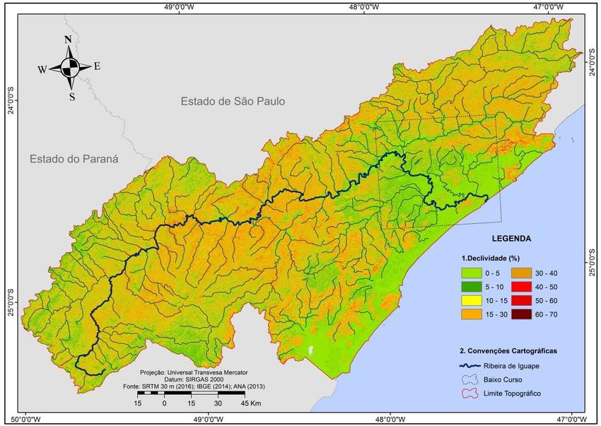

Introdução
A piscicultura é uma das principais alavancas do desenvolvimento social e econômico na região do Vale do Ribeira, aproveitando os recursos naturais locais e gerando novos postos de trabalhos diretos e indiretos A atividade foi iniciada com a criação de carpas em lagos e açudes por comunidades japonesas na região na década de 1930. Após as iniciativas de japoneses, houve um crescimento desta atividade no Vale do Ribeira com o incentivo da extinta Superintendência do Desenvolvimento do Litoral Paulista. Na década de 1990, a atividade se fixou no Vale do Ribeira como uma atividade economicamente sustentável, localizado nos principais municípios:
|  |
| Comprimento: 470 km Nascente: Paraná Foz: Oceano Atlântico |
Para contratação: Chssilva1419@gmail.com